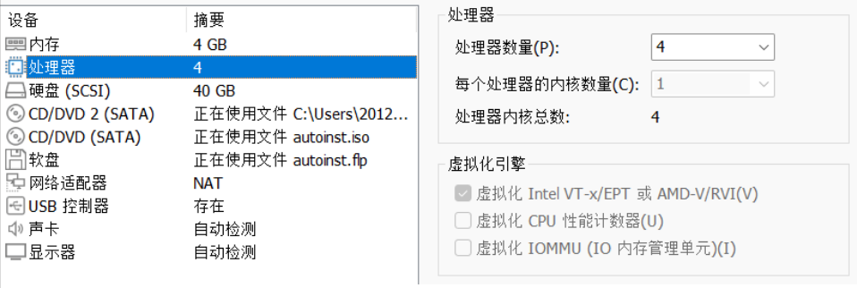

uCore on risc-v
2023年南开大学操作系统实验指北
注意！本指北不能完全替代指导手册，一切以指导手册为准！
FIRST TO DO
在看这个指北之前，先去这个仓库给我点个STAR,一个年级也二百多人呢!
:)
lab负一
如果会配环境，请直接跳过正文部分，直接看本章最后“如何自行解决问题”。
进入正文
很好，恭喜大家来到这个本来只有文科生才会需要的lab负一。
如何选择你的环境
在不会linux命令行的情况下，别挑战自己用 wsl 了。“没那个能力知道吧！”
因此在此推荐vmware+ubuntu22
vmware
首先，你需要一个17，pro。一定要用pro！好处在于可以有快照。
从哪下载？自己csdn搜。
ubuntu22
直接百度ubuntu，然后进入官网下载。
你说用ubuntu14 16 18行不行？不知道，我没试过。。。
如何设置你的虚拟机
本质上，只要不蓝屏，你内存越大越好，磁盘越大越好，核数越多越好。总之拉满没坏处。
要不要开虚拟化
虚拟化开了以后你的虚拟机会变得流畅，这时候ubuntu终于有1%的win7手感了。
注意，vmware开启虚拟化会和windows自己的虚拟化冲突，解决这一过程较为繁琐而且容易把自己电脑搞坏了，不会就算了。
如何安装
自己百度，csdn上这种文章有很多。
简而言之，选好系统和磁盘位置，一路默认下来，基本上不会有什么问题。
装上之后应该做什么？
先做个快照！千万别反复安装虚拟机。。。
如何自行解决问题
建议，逐字逐句，逐个比特阅读下面两个文档。
How To Ask Questions The Smart Way
Stop Ask Questions The Stupid Ways Public
还有问题咋办？问一下gpt，问一下百度、谷歌，这么多问题我都能在csdn和github issue里面搜到，相信你们也可以
First of All!
sudo apt install libsdl1.2-dev
sudo apt install libtool-bin
sudo apt install libglib2.0-dev
sudo apt install libz-dev
sudo apt install libpixman-1-dev
关于配置环境，我录了一个视频。我所使用的是UBUNTU22，具体设置如下

START
在上面的视频之中，可能有人发现了问题，下面这句话当你退出当前的shell之后会失效。因此你需要把这句话也设置为环境变量，比如写入.bashrc(也许你需要把pwd改成你安装的路径)
export PATH=$PWD/riscv32-softmmu:$PWD/riscv64-softmmu:$PATH
START!
cd lab0
make

then
make qemu
The shell should looks like:

then , in another shell
make gdb
if :
riscv64-unknown-elf-gdb \
-ex 'file bin/kernel' \
-ex 'set arch riscv:rv64' \
-ex 'target remote localhost:1234'
riscv64-unknown-elf-gdb: error while loading shared libraries: libncurses.so.5: cannot open shared object file: No such file or directory
make: *** [Makefile:177: gdb] Error 127
install it…
if :
riscv64-unknown-elf-gdb \
-ex 'file bin/kernel' \
-ex 'set arch riscv:rv64' \
-ex 'target remote localhost:1234'
riscv64-unknown-elf-gdb: error while loading shared libraries: libpython2.7.so.1.0: cannot open shared object file: No such file or directory
make: *** [Makefile:177: gdb] Error 127
install it…
then,make gdb again!

FINISHI!
question
实验指导书里有这样两条命令
$qemu-system-riscv64 \
-machine virt \
-nographic \
-bios default \
-device loader,file=$(UCOREIMG),addr=0x80200000\
-s -S
riscv64-unknown-elf-gdb \
-ex 'file bin/kernel' \
-ex 'set arch riscv:rv64' \
-ex 'target remote localhost:1234'
直接运行为什么会报错？
UCOREIMG:未找到命令
ANSWER:
-
你没有执行make，这时候那个ucoreimg都没有，自然不会成功。先make，这时候在bin下面会有ucoreimg
-
make了，还是不行。很简单，$(UCOREIMG)是个变量，你在shell里运行，shell会找这个变量。
shell的变量会存在诸如：/etc/environment、.bashrc等地方，你在shell之中输入env可以看见所有shell能找到的变量。
可是shell里没这个东西啊，没人定义，自然就报错了
那么，实验指导书里这两个命令在哪呢？
在makefile里

ucoreimg也在这里被定义了

到此，解释了我们上面为什么运行make qemu和make gdb而不是实验指导书里那几个很长的命令的原因了
lab0.5
NOTE
lab0 is not over,bucause you could find that make gdb connect time out!
you should
make debug

then

Now you can start lab0.5!
how to debug
加了一个怎么调试的视频，按理说不应该有人需要这个视频的，此处应该有一个流汗黄豆的表情
在看视频之前，视频有几处口误，比如应该不太需要看c语言的汇编代码。重点是boot的过程，这一过程有一部分在opensbi的源代码之中，建议还是看看，opensbi 有详细的文档，看不懂先看文档，再搜索，最后再问 gpt。
lab1
Result of exercise 2 looks like:
You should use
make grade
About challenge
Very easy…
I think EVERYONE should complete it!
本篇主要讲一下如何在UBUNTU上开启SSH服务，以及使用vscode连接ubuntu
看这个视频
lab2
The result should like :
 Good Luck!
Good Luck!
buddy
Notice: 必须有足够充足的测试样例，来体现buddy的各种情况。
当年我写这个玩意儿的时候自己设计的样例（贼拉跨，仅供娱乐，不能供参考）:
首先申请 p0 p1 p2 p3
其大小为 70 35 257 63
从前向后分配的块以及其大小 |128(64+64)|64|64|256(128+128)|512|
其对应的页 |p0 |p1|p3|空 |p2 |
然后释放p1\p3
这时候p1和p3的块应该合并
再释放p0
这时候前512个页已经空了,需要展示合并后的结果
然后我们申请 p4 p5
其大小为 255 255
那么这时候系统的内存空间是这样的
|256|256|512|
|p4 |p5 |p2 |
最后释放。
重点是展示各种分配和合并的状态。可以设计更加复杂的样例来充分体现
slub
slub 在一定程度上是基于buddy的，那么，你需要说明你所实现的 slub (可以是某种程度的简化版本，指导书已经说明)是如何基于buddy的，包括但不限于关于如何分配2的幂大小的页。同时，你需要设计一个复杂的样例，来充分展示你所实现的 slub 算法的种种情况，以证明你的实现是正确的。
注意，挑战仅限学有余力的同学完成。同时，综合考虑性价比，也不需要完成所有挑战任务。当然，如果你对操作系统有着浓厚的兴趣，可以不断深入。
challenge3
希望同学是在认真查阅资料之后得出结论，而不是为了拿到更高的分数而说一些似是而非的东西.
lab2
The result should like :
 Good Luck!
Good Luck!
challenge
Notice: 必须有足够充足的测试样例，来体现LRU的各种情况。